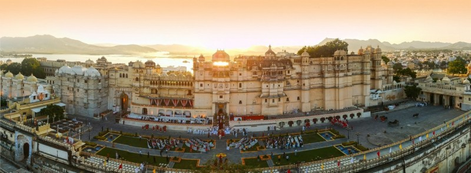

City Palace - A Visual Delight of Udapiur
City Palace, Udaipur is a palace complex situated in the city of Udaipur in the Indian state of Rajasthan.
It was built over a period of nearly 400 years, with contributions from several rulers of the Mewar dynasty.
Its construction began in 1553, started by Maharana Udai Singh II of the Sisodia Rajput family as he shifted his capital
from the erstwhile Chittor to the new found city of Udaipur. The palace is located on the east bank of Lake Pichola and
has several palaces built within its complex. Belonging to the royal Mewar family, City Palace has a number of features
that greatly attract tourists. The architecture of the City Palace structures that leave the visitor awestruck.

Lake Pichola - The Venice of the East
Lake Pichola, situated in Udaipur city in the Indian state of Rajasthan, is an artificial fresh water lake, created in the
year 1362 AD, named after the nearby Picholi village. It is one of the several contiguous lakes, and developed over the last
few centuries in and around the famous Udaipur city. The lakes around Udaipur were primarily created by building dams to meet
the drinking water and irrigation needs of the city and its neighborhood. Two islands, Jag Niwas and Jag Mandir are located
within Pichola Lake, and have been developed with several palaces to provide views of the lake.
Lake Palace - A Dreamy Destination
Lake Palace (formally known as Jag Niwas) is a former summer palace of the royal dynasty of Mewar, now turned into a hotel.
The Lake Palace is located on the island of Jag Niwas in Lake Pichola. It is one of the romantic hotels in the world. Being under
the chain-line of Taj Hotels Resorts and Palaces, the palace hotel offers you world class amenities. The luxury hotel boasts of
elegant interiors, spacious rooms and en-suite spacious washrooms alluring a lot of Indian as well as International visitors.
Jag Mandir - A Dreamy Destination
Jag Mandir is situated in one of the two natural islands in the Pichola lake on its southern end. During the reign of Maharana
Udai Singh II, in 1560, the lake was substantially enlarged by constructing dams across two streams. It is named as "Jagat Mandir"
in honour of the last named Maharana Jagat Singh. The royal family used the palace as a summer resort and pleasure palace for holding parties.
Jagdish Temple - The Abode of Lord Vishnu
Jagdish Temple is a large Hindu temple in the middle of Udaipur in Rajasthan, just outside the royal palace. It has been in continuous
worship since 1651. A big tourist attraction, the temple was originally called the temple of Jagannath Rai but is now called Jagdish-ji.
It is a major monument in Udaipur.
Fateh Sagar Lake - Heart of Udaipur
The tour of Udaipur is incomplete without visiting Fateh Sagar Lake, which is situated in the north of Lake Pichola and is connected
to it through a canal. It is also one of the major tourist attractions in Udaipur. Taking a boat ride on Lake Fatehsagar is indeed a
must-do activity if you are looking for some fun in the city. There are three islands in the lake out of which Nehru Park is the most famous.
Saheliyon ki Badi - A Glimpse of the Life of Royal Women
Saheliyon-ki-Bari (Courtyard or Garden of the Maidens) is a major garden and a popular tourist space in Udaipur in the Indian state of Rajasthan.
It lies in the northern part of the city and has fountains and kiosks, a lotus pool and marble elephants. It was built by Rana Sangram Singh.
There is also a small museum here which has a lot of information about Indian history.
Ambrai Ghat - A Serene and Ideal place for couple
Ambrai Ghat or Manjhi Ghat and Hanuman Ghat is a main ghat situated near the waterfront of Lake Pichola in Udaipur. It is situated opposite
to the Gangaur Ghat, near the Jagdish Chowk area. Ambrai Ghat is a gateway to a delighting experience that passes from the old streets
of the area called as ‘Old City’ in Udaipur. It is a popular for its lake-side location surrounded by many popular hotels including the Ambrai
restaurant. It is also popular for the picturesque view of City Palace, Udaipur, and surrounding lakes.
Monsoon Palace - Palace with stunning city view
Monsoon Palace (known as the Sajjangarh Palace) is set on a hilltop with fantastic city views. It was originally built as a getaway during the
monsoon season and as an astrological center, but the latter project was never finished. The palace has also been used as a royal hunting lodge.
There is a wildlife sanctuary nearby; you can take your kids and enjoy some family time.The sunset point is one of the most attractive sights of
the Palace. During the sunset, the Palace illuminates the glow of golden orange. So never miss out on this marvelous view.
Bahubali Hill - Nature’s Hidden Gem
The ‘City of Lakes’ has a hidden gem of nature tucked away in one of its lakes. About 12 kms away from the hustle-bustle of the city life of Udaipur, is lake
Badi in its namesake village. The lake is not as popular as its famous counterparts like Lake Pichola or Lake Fateh Sagar, but is slowly gathering people’s
attention as the hidden natural beauty which was recently discovered is located just 1 km from the lake and is called Bahubali hills or Badi hills, as the locals call it.
Karni Mata Temple - Popular cable car ride
Shri Manshapurna Karni Mata Temple is a Hindu temple located on the Machla Magra Hills, near the Doodh Talai Lake in Udaipur, Rajasthan. It enshrines
the stone idol of Karni Mata. One can have very beautiful view of whole city and its lakes from the temple as well as while climbing. The ropeway
links the two places through a fixed grip mono cable of 387 meters and is the first ropeway of Rajasthan.
Moti Magri - A Hillock with Myriad Architectural Marvels
Also known as the Pearl Hill, Moti Magri is a hilltop that houses the famous Maharana Pratap Memorial. The hill overlooks Lake Fatehsagar and also has
one of the earliest palaces in Mewar called Moti Mahal, where once Maharana Udai Singh lived. The delightful Japanese Rock Garden and the Pratap Smarak
are the major attractions of Moti Magri. The height of the hill allows tourists to get a panoramic view of Udaipur City. A light and sound show is also
organized in the evening here showcasing the history of Mewar rulers.
Shilpgram - A Place to Learn About the Culture of Many Destinations of India
If you are someone who likes to learn about culture, Shilpgram in Udaipur is the right place for you. This Craftsmen’s Village is situated at a distance
of 3 km from the main city. Shilpgram is a wonderful place to see the different traditions and culture of India as this government-owned complex showcases
the rural life of Rajasthan, Maharashtra, Gujarat and Goa. Other than buying the traditionally made items here, one can also enjoy horse and camel rides
along with traditional dance and music at Shilpgram.
Pratap Gaurav Kendra - Historical Place museum
The beautiful city has numerous gardens, centers, lakes, and so much more. One of the additions in Udaipur’s beauty is the Pratap Gaurav Kendra which is famous
for its larger than life statue of Maharana Pratap. This place is dedicated to the king of Mewar Maharana Pratap and is an ideal place to know about him and the
ancient heritage of Mewar. Aiming at the belief that Maharana Pratap must be the youth icon.
Bagore ki Haveli - A Peek into the Life of the Royals
Bagore-ki-Haveli is a haveli in Udaipur in Rajasthan state in India. It is right on the waterfront of Lake Pichola at Gangori Ghat. The palace has over a hundred rooms,
with displays of costumes and modern art. The glass and mirror in the interiors are Haveli work. It also preserves an example of Mewar painting on the walls of the Queen's Chamber.
The two peacocks made from small pieces of colored glasses are examples of glasswork.